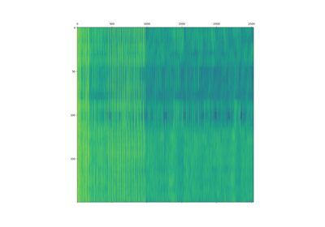
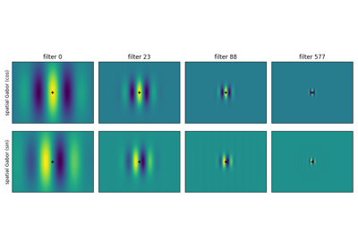

Motion energy pyramids

Using the motion energy pyramid class
Using the motion energy pyramid class


Spatial components of the motion energy filters
Spatial components of the motion energy filters

Computing motion energy features from batches of stimuli
Computing motion energy features from batches of stimuli